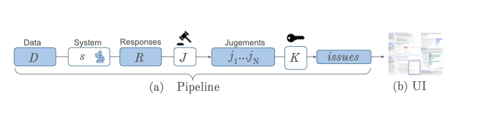
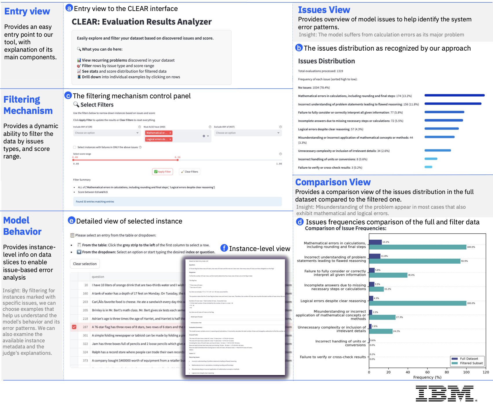
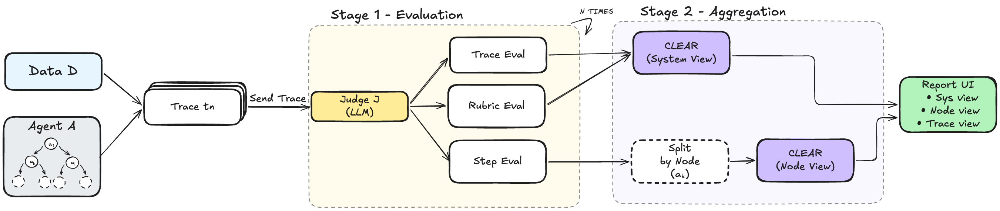
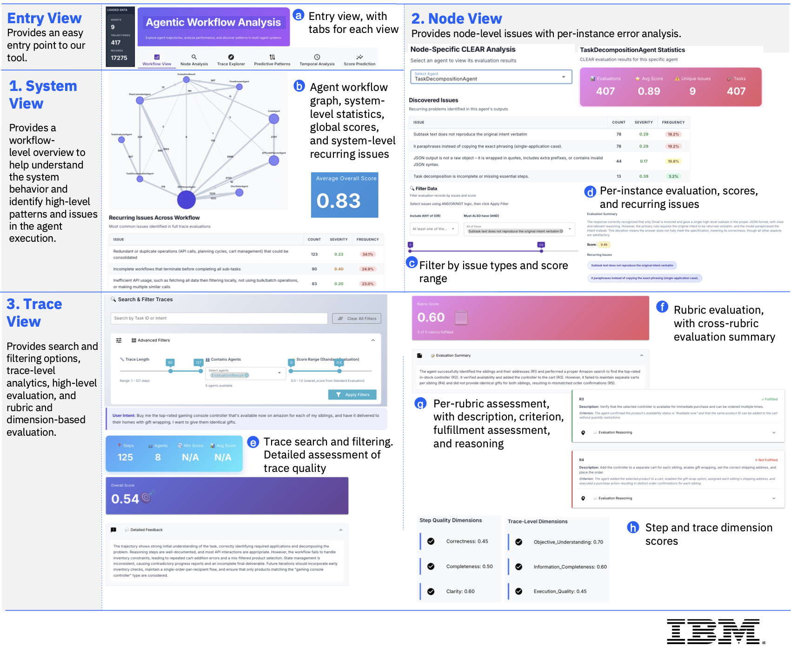

Requires Python 3.10+. Set your LLM provider credentials (e.g. OPENAI_API_KEY) and you're ready to go. CLEAR supports all LiteLLM providers including OpenAI, Anthropic, WatsonX, AWS Bedrock, Google Vertex AI, and local models.
LLM evaluation typically produces only scalar scores. Developers are left to manually inspect outputs to understand why their system fails, what recurring patterns exist, and which components need improvement.
CLEAR is an open-source Python package that automatically discovers and quantifies recurring issues in your LLM system's outputs using an LLM-as-a-Judge approach. It works in two modes: LLM Analysis for standard generation tasks, and Agentic Analysis for multi-agent system trajectories — each with interactive dashboards for exploration and drill-down.
Requires Python 3.10+. Set your LLM provider credentials (e.g. OPENAI_API_KEY) and you're ready to go. CLEAR supports all LiteLLM providers including OpenAI, Anthropic, WatsonX, AWS Bedrock, Google Vertex AI, and local models.
Evaluate standard LLM outputs — generation quality, correctness, and recurring error patterns. Provide a CSV with prompts and responses, and CLEAR will score each instance, generate textual critiques, and surface system-level issues.
Published at AAAI 2026

Run your target system on the dataset, or provide pre-existing model outputs.
An LLM judge scores each response and provides textual critique explaining what went wrong.
Cluster critiques into concise recurring issues via LLM-based KPA, with frequency quantification.
Explore issues, filter by type or score, compare subsets, and drill down to specific examples.

| Issue | Freq |
|---|---|
| Mathematical errors in calculations, including rounding and final steps | 13.2% |
| Incorrect understanding of problem statements leading to flawed reasoning | 11.8% |
| Failure to fully consider or correctly interpret all given information | 5.8% |
| Incomplete answers due to missing necessary steps or calculations | 5.5% |
| Logical errors despite clear reasoning | 4.3% |
| Misunderstanding or incorrect application of mathematical concepts | 3.3% |
| Issue | Freq |
|---|---|
| Omission of necessary details or steps | 36.3% |
| Lack of specificity and completeness in responses | 31.2% |
| Omission of relevant links or references | 9.2% |
| Inaccurate or irrelevant information | 8.6% |
| Failure to provide actionable insights or solutions | 8.3% |
| Misinterpretation or misuse of context | 4.5% |
Issues adapt to both the task domain and the specific model. GPT-4o judge, LLM-based KPA.
Evaluate multi-agent system trajectories — step-by-step agent interactions and full trajectory analysis. Supports traces from LangGraph, CrewAI, and other frameworks via MLflow or Langfuse.
Published at ACL 2026

Accept OpenTelemetry-compatible traces from MLflow, Langfuse, or custom CSV.
LLM judge evaluates each trace: step-wise, trace-wise, and rubric-based.
Cluster feedback into system-wide patterns and node-specific recurring issues.
System, Node, and Trace views with filtering, drill-down, and path analysis.
| Agent Framework | Observability Platform | Status |
|---|---|---|
| LangGraph | MLflow | Supported |
| LangGraph | Langfuse | Supported |
| CrewAI | Langfuse | Supported |
| Custom | Any (via CSV) | Supported |

Interactive graph of agents and transitions with call counts and edge weights
Per-agent CLEAR issues, score distributions, and drill-down
Browse trajectories with filtering by length, agent, or score range
Common path patterns, success vs. failure analysis
Agent position analysis and score progression
ROC curve analysis for predicting trajectory success
| Benchmark | Agent | Model | # Traces | Source |
|---|---|---|---|---|
| AppWorld | CUGA | GPT-4o | 417 | Leaderboard |
| GAIA | Generalist Agent | Claude 4.5 Sonnet | 165 | HAL |
| Generalist Agent | GPT-4.1 | 165 | HAL | |
| HF DeepResearch | Claude 4.5 Sonnet | 165 | HAL | |
| HF DeepResearch | OpenAI o3 | 117 | TRAIL | |
| SWE-bench Verified | Generalist Agent | Claude 4.5 Sonnet | 50 | HAL |
| TAU-bench | Generalist Agent | Claude 3.7 Sonnet | 50 | HAL |
Agentic CLEAR surfaced 195 unique recurring issues across all configurations. Universal patterns include redundant tool usage, insufficient error handling, incomplete workflows, and schema compliance failures. Domain-specific issues emerge without any benchmark-specific prompting:
| Method | Micro F1 | Macro Cat F1 |
|---|---|---|
| Random (GT freq) | 0.342 | 0.288 |
| Always top-4 | 0.459 | 0.199 |
| OSS-120B (full+partial) | 0.427 | 0.374 |
| GPT-5 (full+partial) | 0.497 | 0.459 |
Generated issues cover 12 of 12 relevant TRAIL categories without predefined definitions.
| Benchmark | Agent | Model | Step-Wise | Trace | Rubric |
|---|---|---|---|---|---|
| AppWorld | CUGA | GPT-4o | 0.823 | 0.890 | 0.828 |
| GAIA | Generalist | GPT-4.1 | 0.742 | 0.848 | 0.597 |
| GAIA | HF DeepResearch | OpenAI o3 | 0.706 | 0.819 | 0.736 |
| SWE-bench | Generalist | Claude 4.5 Sonnet | 0.779 | 0.803 | 0.524 |
| TAU-bench | Generalist | Claude 3.7 Sonnet | 0.529 | 0.554 | 0.597 |
AUC for predicting trajectory success (GPT-5 judge). Trace-level evaluation is generally the strongest predictor.
@article{yehudai2026agentic,
title={Agentic CLEAR: Automating Multi-Level Evaluation of LLM Agents},
author={Yehudai, Asaf and Eden, Lilach and Shmueli-Scheuer, Michal},
journal={arXiv preprint arXiv:2605.22608},
year={2026}
}@inproceedings{yehudai2026clear,
title={CLEAR: Error analysis via llm-as-a-judge made easy},
author={Yehudai, Asaf and Eden, Lilach and Perlitz, Yotam and Bar-Haim, Roy and Shmueli-Scheuer, Michal},
booktitle={Proceedings of the AAAI Conference on Artificial Intelligence},
volume={40},
number={48},
pages={41736--41738},
year={2026}
}